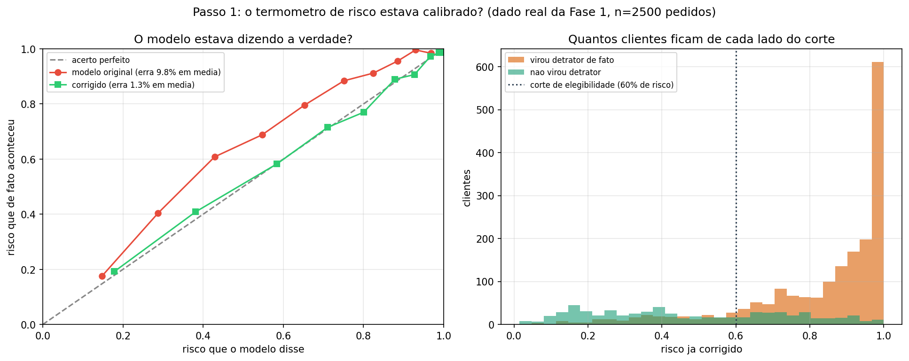
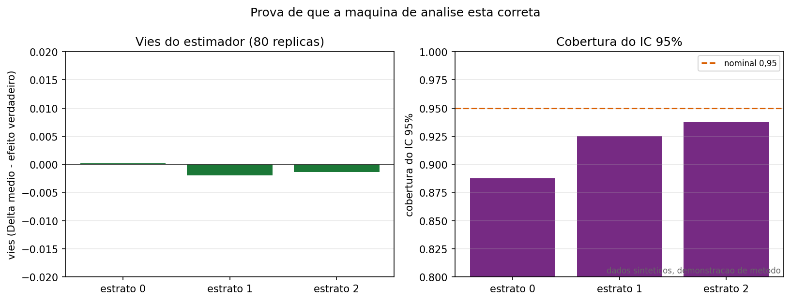
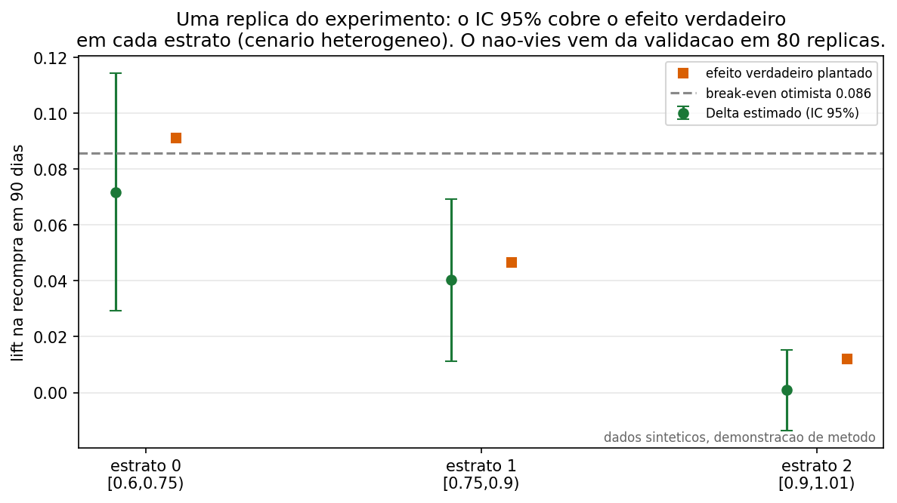
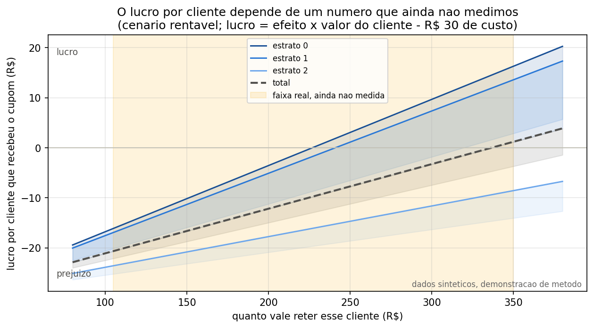
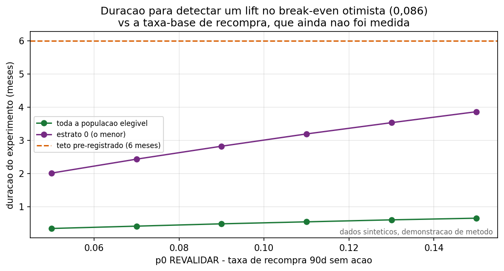

O que prevê
Risco de detratação a partir de sinais operacionais do pedido. Região foi excluída: o problema observado é sistêmico, não regional.
Tech Challenge Fase 1 · FIAP
Uma simulação de intervenção antes que a experiência vire detratação.
Pedido em análise
Os dados ficam neste navegador. Nenhuma informação é enviada a um servidor.
O resultado traz a probabilidade de cada classe de NPS (Detrator, Neutro, Promotor) e se o corte de 19% recomenda ação de retenção. A classe mais provável pode não bater com a decisão de agir: o corte usa só a probabilidade de detrator, porque esse é o erro que custa mais caro para o negócio.
Cenário financeiro
Esta aba altera premissas. Ela não altera o modelo.
As métricas comparam quantos detratores existem no volume mensal, quantos o modelo pega no recall configurado e quantas ações seriam disparadas sem necessidade real (falso positivo). A tabela de sensibilidade varia LTV e retenção pós-ação juntos: o ROI muda bastante dependendo dessas duas premissas, e nenhuma delas foi medida neste projeto.
Como ler esta demo
Risco de detratação a partir de sinais operacionais do pedido. Região foi excluída: o problema observado é sistêmico, não regional.
Uma Random Forest com 100 árvores combina os 20 sinais. A ação usa a probabilidade de detrator, separada da classe mais provável.
LTV e retenção são premissas de negócio. O ganho mais confiável é comparar o corte de 19% com o corte padrão de 50%.
O ranking abaixo mostra quais sinais o modelo mais usa para separar as classes de NPS. Importância alta não significa causa: é só o quanto aquele sinal ajuda a árvore a decidir, medido sobre o dado de treino.
Continuidade
O ROI de 222% da aba anterior é uma conta feita em cima de dois números que ninguém mediu. Esta aba constrói a régua que mediria de verdade.
Dados sintéticos, demonstração de método. Nenhum número aqui é resultado real do cupom.
Resumo em uma frase: construímos e testamos o instrumento que decidiria se vale escalar o cupom, mas ele ainda não tem os dois números reais que faltam: quantos clientes já recompram sozinhos, e quanto vale reter um cliente. Os passos 1 e 2 provam que o instrumento funciona direito. O passo 4 mostra por que, sem esses dois números, ninguém consegue afirmar hoje se o cupom paga a própria conta.

Antes de usar "40% de risco de virar detrator" para decidir qualquer coisa, precisamos saber se esse número bate com a realidade. No dado real da Fase 1, o modelo original errava para menos em toda a faixa: dizia, por exemplo, 40% quando o risco de verdade era maior. Corrigimos essa distorção (recalibração isotônica) e o erro médio caiu de 10 pontos percentuais para 1,3. Achado real, medido no dado da Fase 1, não sintético. Sem esse ajuste, qualquer conta feita em cima da probabilidade estaria em cima de um número torto.

Antes de confiar na fórmula que vai dizer "o cupom funcionou ou não", testamos essa fórmula em 60 cenários onde já sabíamos a resposta certa de antemão (nós mesmos plantamos o efeito). Resultado: a fórmula acerta o valor certo, em média, e quando ela diz "95% de confiança" ela realmente acerta perto de 95% das vezes. Se esse teste falhasse, nenhum número dos passos seguintes seria confiável.

Simulamos um A/B de verdade: sorteamos clientes entre "recebe cupom" e "não recebe", separados em três grupos por nível de risco. Plantamos um efeito diferente em cada grupo de propósito, maior no detrator ainda recuperável, quase nulo no detrator quase certo, para ver se o método enxerga essa diferença. Ele enxerga: em todos os grupos, o que o método mediu bate com o efeito real que plantamos, dentro da margem de erro esperada.

Cada linha do gráfico é um grupo de risco; o eixo horizontal é o número que ainda não medimos, quanto vale reter um cliente (a faixa laranja, entre R$ 105 se contarmos só a margem e R$ 350 se contarmos a receita cheia). Abaixo da linha zero é prejuízo, o cupom custou mais do que trouxe; acima é lucro. Repare que a linha "total" cruza de prejuízo para lucro bem no meio da faixa laranja: com os dados que temos hoje, não dá para afirmar se o cupom se paga ou não. Essa incerteza não é falha do método, é a informação real que falta. Decidir escalar sem medir o valor do cliente no CRM seria apostar, não decidir.

Rodar esse teste com clientes reais não é instantâneo. Quanto menos clientes recompram sozinhos, sem nenhuma ação, mais tempo o teste precisa rodar para separar sinal de ruído, porque o efeito do cupom fica mais difícil de distinguir da variação normal. Por isso travamos um teto de 6 meses: se depois desse prazo o resultado ainda não for claro, a conclusão honesta é "o efeito, se existe, é pequeno demais para valer a pena no volume atual", não "vamos continuar testando para sempre".
Um experimento mal desenhado pode dar um resultado errado sem que ninguém perceba. A tabela mostra o mesmo cenário (efeito real "forte") rodado três vezes: uma com todas as proteções do desenho, e duas ignorando uma proteção de cada vez. "Δ medido" é o que o experimento diria ter visto; "Δ verdadeiro" é o efeito que de fato plantamos; "P(lucro>0)" é a chance de a decisão final dar lucro.
| Cenário | Δ medido | Δ verdadeiro | P(lucro>0) |
|---|---|---|---|
| Com todas as proteções (desenho do spec) | 0,1401 | 0,1509 | 0,555 |
| Contaminação do controle 30% ignorada | 0,0950 | 0,1509 | 0,140 |
| Prazo contado a partir da ação, não da entrega | 0,1334 | 0,1509 | 0,510 |
Ignorar a contaminação do controle (clientes do grupo controle que recebem o cupom por outro canal) puxa o efeito medido para baixo em quase um terço. Na prática, isso mataria um programa que na verdade funcionava.
Se isso fosse um projeto real, o próximo passo seria medir os dois números que faltam (quantos clientes recompram sozinhos, quanto vale reter um cliente) e rodar essa mesma régua nos dados de verdade. Ela decidiria sozinha, sem depender de opinião, se o cupom escala, fica em teste um pouco mais, ou é desligado.
Desenho completo: ADR-0002 e spec. Débito de engenharia resolvido: ADR-0003. Protótipo completo: notebook.